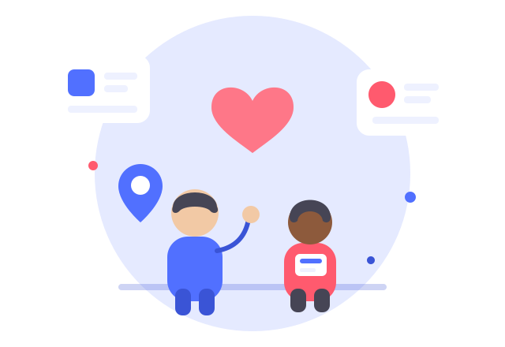

Toutes tes infos et tous tes contacts utiles au même endroit, quand l'accompagnement de l'ASE s'arrête. Par des jeunes de l'ASE, pour des jeunes de l'ASE.
Toutes tes infos et tous tes contacts utiles au même endroit, quand l'accompagnement de l'ASE s'arrête. Par des jeunes de l'ASE, pour des jeunes de l'ASE.
Quand l'ASE s'arrête, on peut vite se sentir largué·e. Ici, pas de jargon : des infos claires, des contacts fiables et des vrais coups de main, au même endroit.

À 21 ans, les aides de l'Aide Sociale à l'Enfance s'arrêtent, souvent du jour au lendemain. AZELER t'oriente vers les bonnes structures : aide alimentaire, logement, aides financières, emploi, soutien psychologique, accompagnement pour les survivant·es de violences. Une seule plateforme pour tout retrouver.
Choisis ce qui correspond à ta situation pour accéder directement aux infos et aux contacts.
Trouver un logement, le financer (APL, Visale, Loca-Pass) et les solutions d'urgence.
Y aller →Bail, caution, état des lieux, logement décent, impayés : tes droits avec l'ADIL.
Y aller →Aides financières, budget, papiers et démarches administratives.
Y aller →L'aide alimentaire et la carte des épiceries sociales et solidaires.
Y aller →Couverture maladie, soins même sans mutuelle, et soutien psychologique.
Y aller →Trouver un emploi, la Mission locale, le CEJ, l'alternance et la formation.
Y aller →Tes droits ASE (contrat jeune majeur, recours), aide juridique et violences.
Y aller →Un formulaire simple et gratuit pour recevoir un kit d'hygiène, sans te justifier.
Faire une demande →Ces chiffres, ce n'est pas pour faire peur : c'est pour rappeler que tu as le droit d'être aidé·e.
Sources : CESE (2022), Fondation Abbé Pierre, DREES / ONPE. Chiffres reformulés à titre indicatif ; derrière chaque nombre, il y a des parcours réels — et le droit d'être accompagné·e.
Trois étapes, et c'est parti. Pas de compte, pas de paperasse.
Logement, argent, santé, alimentaire, papiers… Repère l'espace qui correspond à ta situation.
Chaque espace te donne des explications claires, les bons interlocuteurs et les contacts près de chez toi.
Tu contactes une asso, tu demandes un kit d'hygiène ou tu suis une fiche pas à pas. On reste avec toi.
Les réponses les plus demandées sur l'asso. Et pour tout le reste, il y a la FAQ complète.
AZELER s'adresse d'abord aux jeunes qui sortent de l'Aide sociale à l'enfance (ASE), quand l'accompagnement s'arrête. Par des jeunes de l'ASE, pour des jeunes de l'ASE.
Oui, à 100 %. Les infos, l'orientation et l'accompagnement sont entièrement gratuits.
Passe par le site : remplis le formulaire du kit d'hygiène ou choisis la rubrique qui correspond à ta situation. On fait ensuite le point avec toi.
Oui. Ce que tu partages est traité avec discrétion, dans le respect de la réglementation sur la protection des données.
Savon, gel douche, brosse à dents, protections, produits d'hygiène… Un kit complet, gratuit et sans avoir à te justifier. Il te suffit de remplir un formulaire simple.
Dis-nous ta situation en quelques clics (logement, argent, santé…) et laisse un moyen de te recontacter. C'est confidentiel et sans jugement.
Nous contacter →